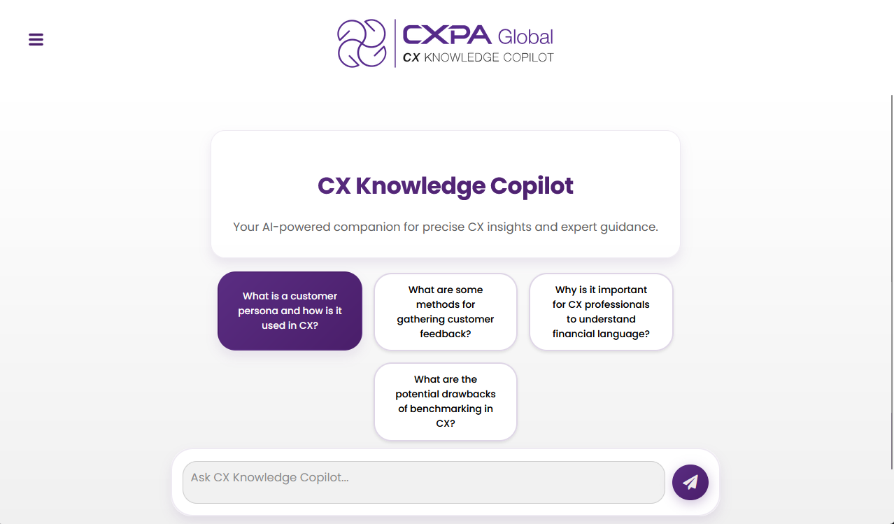
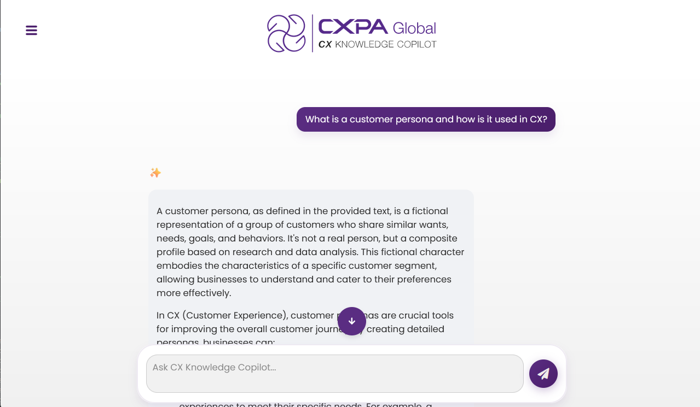
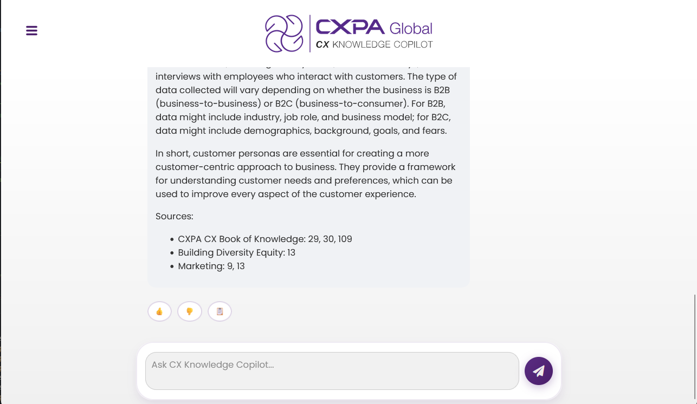
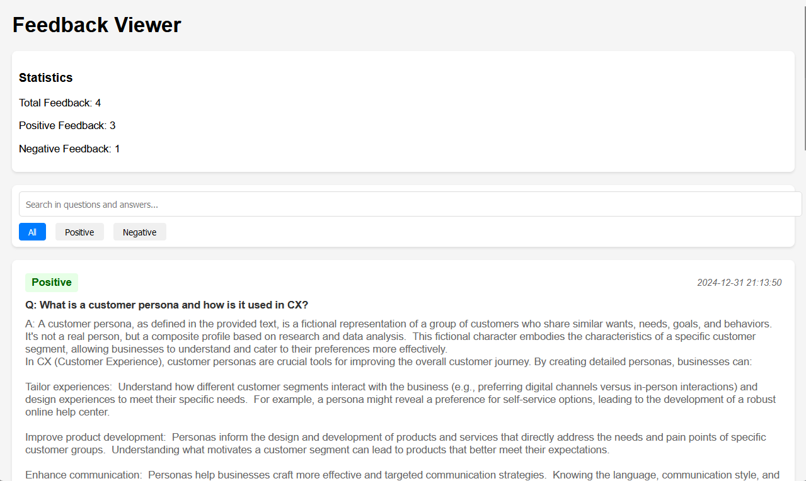
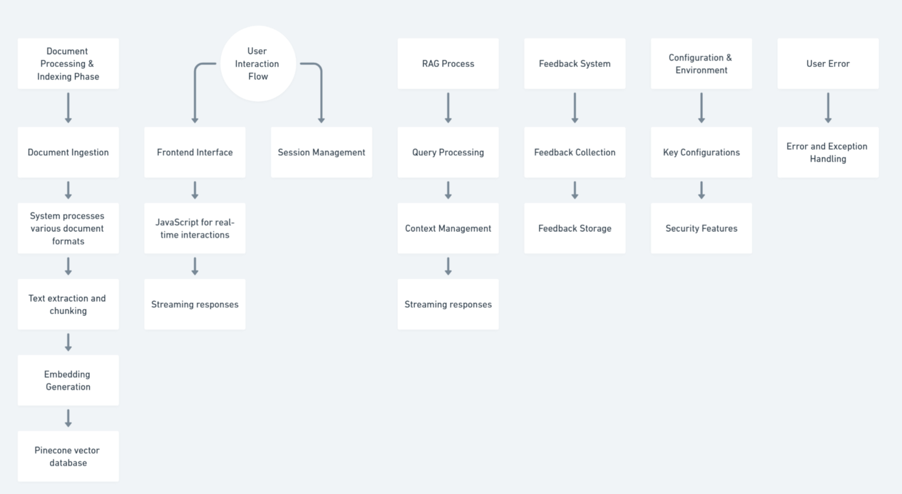

Retrieval Augmented Generation (RAG) AI Tool
Project Screenshots




System Architecture

Project Description
This project is a modern knowledge management system that leverages Retrieval-Augmented Generation (RAG) technology to enable organizations to efficiently organize, search, and retrieve information from their documents. The application combines semantic search capabilities with advanced question answering, providing a powerful tool for knowledge management and information retrieval.
Key Features:
- Semantic Search: The application utilizes a Pinecone vector database to perform semantic searches, allowing users to find information based on the meaning of their queries rather than just keyword matching. The vector database uses cosine similarity for measuring the relevance of the embeddings.
- Advanced Question Answering: Google's Gemini 1.5 Flash is integrated to provide advanced question answering capabilities, enabling the system to understand complex questions and generate relevant answers based on the provided knowledge base.
- Document Ingestion and Processing: The system supports the ingestion of PDF and text documents, which are then processed, chunked, and indexed for efficient retrieval.
- Interactive Chat Interface: A user-friendly chat interface allows users to interact with the system, ask questions, and receive answers in a conversational manner.
- Context-Aware Conversations: The system maintains context during conversations, allowing for more natural and coherent interactions.
- Precise Information Retrieval: The RAG approach ensures that the system retrieves precise and relevant information from the knowledge base to answer user queries.
Technology Stack:
- Programming Language: Python 3.8+
- Vector Database: Pinecone (using cosine similarity)
- Large Language Model: Google Gemini 1.5 Flash
- Text Embedding Model: all-MiniLM-L6-v2 from Sentence Transformers
- Web Framework: Flask
- Frontend: HTML, CSS, JavaScript
Credits & Acknowledgments
Acknowledgments for the Product Team:
- Project Head: Venkata Dasari
- Product Manager: Meghana Gundluru
- Technical Advisor: Raj Gundluru
- Development Team: Raj Gundluru
Special thanks to:
- CXPA Global team for their valuable feedback and support
- Open-source community for their excellent tools and documentation
- Beta testers who provided invaluable feedback during development
×